公司简介、企业使命、核心能力
教育部政策导向、"三位一体"战略
新课标要求、"一核四层四翼"评价体系
情景化命题、关键能力考查、阅读量要求
阅读速度慢、方法缺失、知识储备不足
备课效率低、资源匮乏、成绩瓶颈
产品定位、研发背景、适用场景
多终端协同、核心模块一览
AI辅助备课、语音互动、云端协同
进度追踪、阅读课表、情景语料库
智能词包、卡片学习、教师共研平台
手机端、平板端、电脑端实拍展示
一目十行、过目不忘、赋能高考等
眼肌训练、专注力培养、科学方法
24h更新、专家精选、精准对标高考
思维发展、思辨能力、学科素养
同步联动、跨校共享、打破信息孤岛
深度精讲、教学大纲生成、古文解析
英语互动、名著阅读、阅读课表
情景语料、智能词包、教师共研
训练数据、提升率、见效周期
多校对比、教师反馈、荣誉认证
碎片化安排、管理机制、激励体系
山西、河南、吉林等多校实践
合作方式、联系方式、公司地址
科文图灵（北京）科技有限公司，主要承接和开展人工智能技术相关的调查研究、成果转化、合作交流、专业咨询、专业培训，承接政府对人工智能技术相关领域的委托服务。
公司与全国各省市教育局以及知名院校建立长期合作关系，共同协作、研发行业前沿科技课题。近年来，公司参与全国各知名院校关于人工智能、教育信息化等校园改造项目，交出了满意的答卷，配合落地多个大型改造项目。
推动和赋能学校科技创新提供优质服务，为学校科技创新提供出口，为学校科技引领提供赛道，为学校拔尖人才提供土壤，为教育、科技、人才三位一体提供支持。
人工智能技术在教育领域的深度调研与趋势分析，为教育决策提供数据支撑
将前沿AI研究成果转化为可落地的教育产品，打通产学研链条
搭建院校间、区域间的教育科技合作桥梁，促进优质资源共享
为教师提供AI教育工具的专业培训与持续支持，提升数字素养
人工智能技术相关领域的调查研究 · 科技成果转化 · 国内外合作交流 · 专业咨询服务 · 教师专业培训 · 政府委托服务 · 教育信息化校园改造 · AI教育产品开发
教育部部长怀进鹏在多次重要会议上强调，要深刻领悟教育、科技、人才"三位一体"的战略意义，切实增强加快建设教育强国的使命感责任感。
怀进鹏部长明确提出，将人工智能教育全面融入各级各类教育，提高学生数字技能和数字素养。这一政策信号为AI教育产品的发展指明了方向。
中国《义务教育信息科技课程标准》正式发布，人工智能已正式加入到中国义务教育7—9年级的学习内容中。这意味着：
人工智能从选修变为必修，纳入义务教育课程体系，成为学生必备素养
明确要求数字技能和数字素养的培养目标，为教学提供清晰指引
AI工具将成为日常教学的常态手段，而非可选的辅助工具
数字素养将纳入学生综合评价体系，成为衡量教育质量的重要指标
传统纸质教学向数字化、智能化转型，教育信息化基础设施持续完善
AI驱动的自适应学习成为主流，因材施教从理想变为现实
教育大数据为教学改进提供科学依据，精准教学成为可能
教育部考试中心正式发布《中国高考评价体系》，确立了"一核四层四翼"的全新评价框架，从根本上改变了高考命题的方向和要求。
新课标要求的语文学科素养涵盖四大维度，全面提升学生的语文综合能力：
培养学生对语言文字的理解、运用和创造能力，掌握语言表达的基本规律和技巧
通过阅读训练发展逻辑思维、批判性思维和创造性思维，提升思维品质
提升文学审美能力和创意表达能力，培养高雅的审美情趣
深化对中华优秀传统文化的理解与传承，增强文化自信
试题紧扣社会主义核心价值观，引导学生树立正确的世界观、人生观、价值观
突出思维品质考查，要求学生具备分析、综合、评价、创造等高阶思维能力
试题创设真实情境，考查学生在实际问题中运用知识的能力
新高考语文学科考查的关键能力包括：信息获取与加工、逻辑推理与论证、科学探究与思维建模、批判思维与创新能力、语言组织与表达。重大社会现实问题入考题成为新趋势。
新高考改革后，高考语文试卷的阅读量大幅增加，对学生的快速阅读能力提出了前所未有的挑战：
新高考不仅语文学科需要大量阅读，其他学科的情景化命题同样对阅读能力提出了更高要求：
| 学科 | 阅读能力需求 | 典型表现 |
|---|---|---|
| 语文 | 快速阅读、深度理解、文学鉴赏 | 试卷汉字10000+字，部分同学做不完 |
| 数学 | 情景化命题理解、信息提取 | 题干变长，需要快速提取关键数学信息 |
| 英语 | 快速阅读、词汇理解、语境分析 | 阅读理解文章篇幅增加，难度提升 |
| 历史 | 史料阅读、信息加工、综合分析 | 大量原始史料阅读，需要快速理解分析 |
| 政治 | 时事阅读、政策理解、综合论述 | 紧密结合时事热点，需要广泛知识储备 |
| 物理 | 科技文献阅读、实验报告理解 | 情景化题目增多，需要阅读理解能力 |
| 化学 | 实验流程阅读、化学文献理解 | 实验情景题增加，需要快速阅读分析 |
新高考语文命题的内在逻辑表现为三条主线：
试题贯穿立德树人根本任务，引导学生坚定理想信念、厚植爱国主义情怀、加强品德修养、增长知识见识、培养奋斗精神。
以学科素养为导向，以关键能力为考查重点，综合考查学生的必备知识、关键能力、学科素养和核心价值。
通过创设真实、典型的情境，将知识、能力、素养考查有机串联，实现综合考查目标。
在新高考背景下，学生在阅读方面面临着多重挑战，这些问题直接影响学习效率和考试成绩：
大部分学生缺乏快速阅读的科学方法，阅读速度停留在传统水平，无法适应新高考大阅读量的要求。高考试卷10000+字的卷面量，让阅读速度慢的学生根本做不完。
传统纸质阅读材料更新慢、内容有限、无法互动。学生只能被动阅读，缺少即时反馈和互动训练，学习效果大打折扣。
没有掌握科学的阅读方法和技巧，阅读效率低下。不知道如何快速提取关键信息、如何进行深度理解、如何做好阅读笔记。
阅读量少、知识面窄，面对新高考情景化命题时缺乏必要的背景知识。特别是跨学科的情景题，需要广泛的知识积累。
研究表明，阅读速度与理解能力呈正相关。阅读速度提升40%以上的学生，语文成绩平均提升5-10分。在新高考背景下，快速阅读能力已成为决定高考成绩的关键因素之一。
新高考对阅读量和阅读速度的要求大幅提升，但学生的阅读能力和方法没有同步提升。这个矛盾需要通过科学、系统的训练来解决——这正是秒读课堂的核心价值所在。
阅读内容不系统、不全面、不海量，缺乏标准化的阅读文章库，教师选材全凭个人经验
无法快速精选相对应的阅读材料，海量网络资源中筛选优质内容耗时巨大
纸质阅读材料更新周期长，内容容易过时，无法紧跟高考命题新动向
搜集、下载、整理、排版、校对、打印阅读教材，流程繁琐耗时费力
缺少高效、精准的数字化阅读平台，无法实现阅读教学的系统化管理
缺乏有效的抓手来打破制约高考成绩提升的瓶颈，传统方法效果有限
不能及时把握高考共鸣点、准确捕捉高考新动向，教学与考试脱节
缺乏学生阅读数据的采集和分析，无法精准评估教学效果和学生进步
传统阅读教学以纸质材料为主，存在更新慢、互动差、数据缺、效率低等问题。在新高考对阅读量和速度要求大幅提升的背景下，传统模式已无法满足教学需求。学校迫切需要数字化转型升级，用科技手段赋能阅读教学。
"秒读课堂"是科文图灵（北京）科技有限公司研发的教育科技成果。它是根据高考对快速阅读能力、大量阅读内容的迫切需求，参考国内外教育专家的科研成果，融合教育学、心理学、脑科学而精心研发，是集信息化、数字化、AI网络化于一体的阅读平台。
适用于各级各类学校，特别适用高中阶段备战高考、冲刺高考、决胜高考。
参考国内外教育专家的科研成果，融合教育学、心理学、脑科学三大领域，确保产品科学性和有效性。
紧密围绕新高考对快速阅读能力的迫切需求，针对学校、教师、学生三方痛点精准设计。
备战高考的核心阅读训练平台，每天碎片化训练即可显著提升阅读速度和理解能力
提前培养快速阅读习惯，为高中阶段的学习打下坚实基础
高效备课工具，AI辅助生成教学大纲、精选文章、深度解析
数据化管理平台，实时监控阅读训练进度和效果
在教育部"十四五"教育科研规划全国重点课题评选中，AI秒读课堂荣获一等奖。这一成就标志着该工具在教育技术领域的杰出贡献和权威认可！
秒读课堂支持在教室多媒体大屏和电脑中使用，教师备课、课堂教学、学校管理全场景覆盖，助力高效阅读教学。
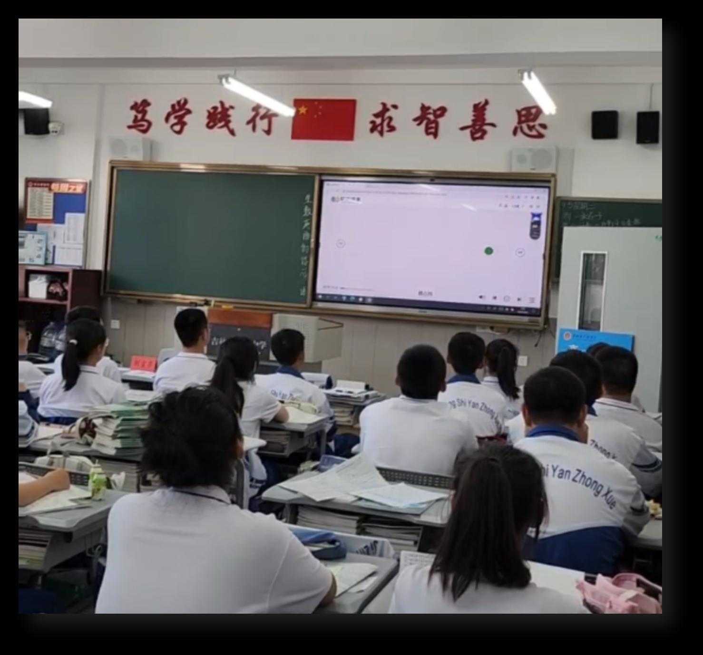
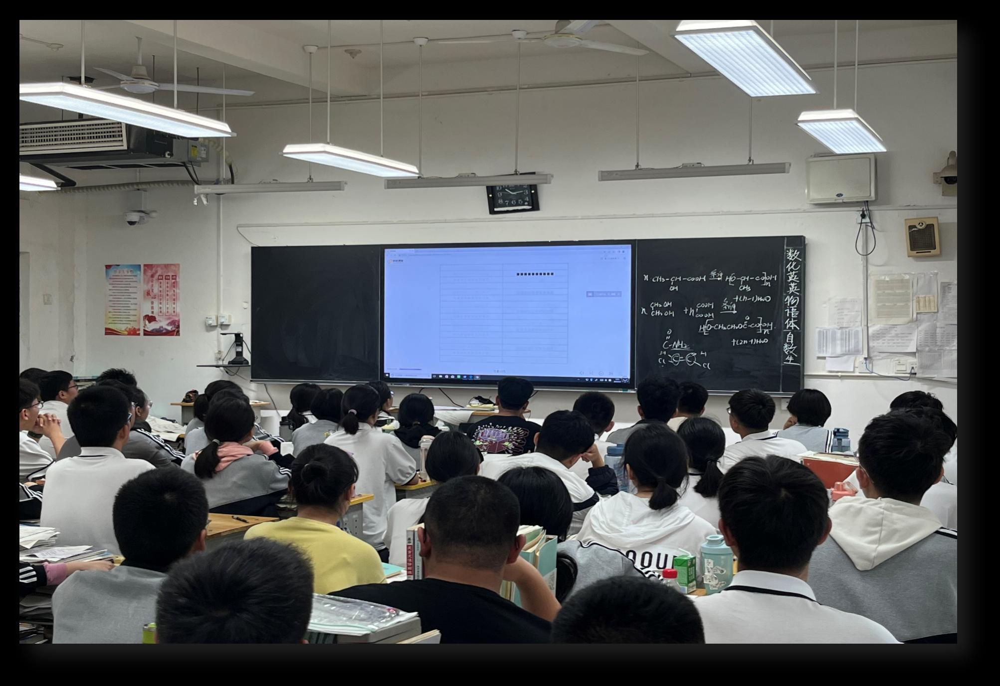
多师协同、跨校共享、打破信息孤岛
深度精讲、大纲生成、古文解析
高保真音频、智能跟读、发音评估
无感数据记录、可视化报告、智能提醒
按周编排、精读泛读、一屏搞定
对标高考、分类清晰、实时更新
高频词汇、一键成文、卡片记忆
名师共创、资源共享、打破校际壁垒
秒读课堂2.0全新引入AI辅助备课功能，支持现代文深度精讲、教学大纲自动生成、古文智能解析，让备课效率提升5倍。
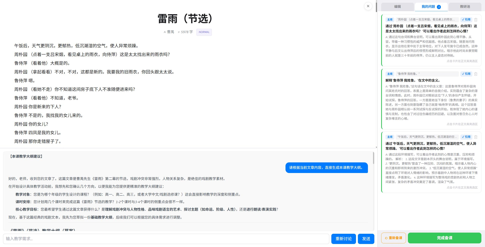
对话式生成教学大纲与课堂设计，为老师提供教学灵感。教师只需输入课文标题或关键词，AI即可生成完整的教学大纲、课堂活动设计和教学建议。支持多轮对话优化，直到满意为止。
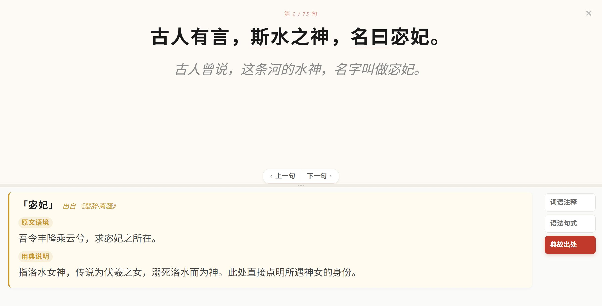
经典古文上传即完成。系统直接自动产出精准翻译、语法句式、词语注释及典故出处。让古文教学变得轻松高效，教师可以将更多精力放在文化内涵的讲解上。
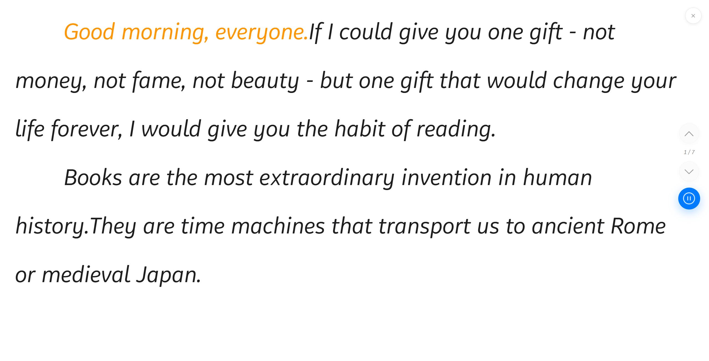
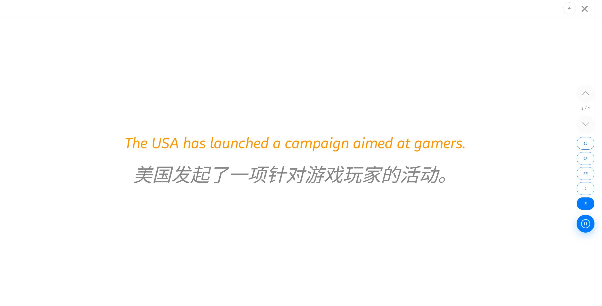
清晰的数字化全书目录指引，帮助学生合理规划阅读节奏。教师可按周次、按日期提前规划阅读任务，精读、泛读、多媒体作业一屏轻松搞定。
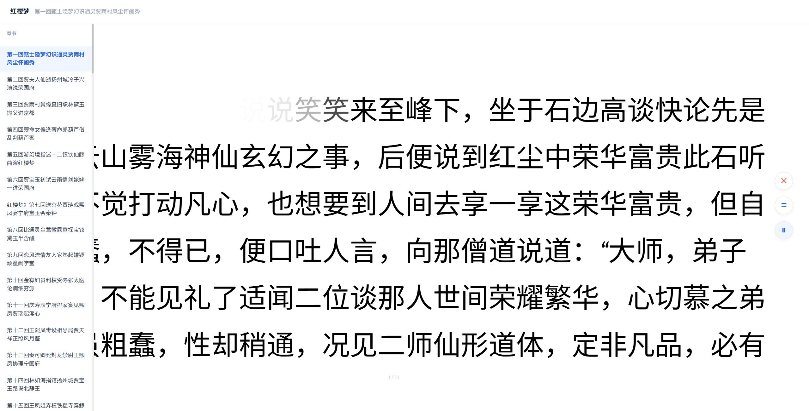
学生阅读行为自动记录，无需手动打卡，数据真实可靠。自动生成阅读报告，教师、家长、学生均可查看阅读进度和效果。
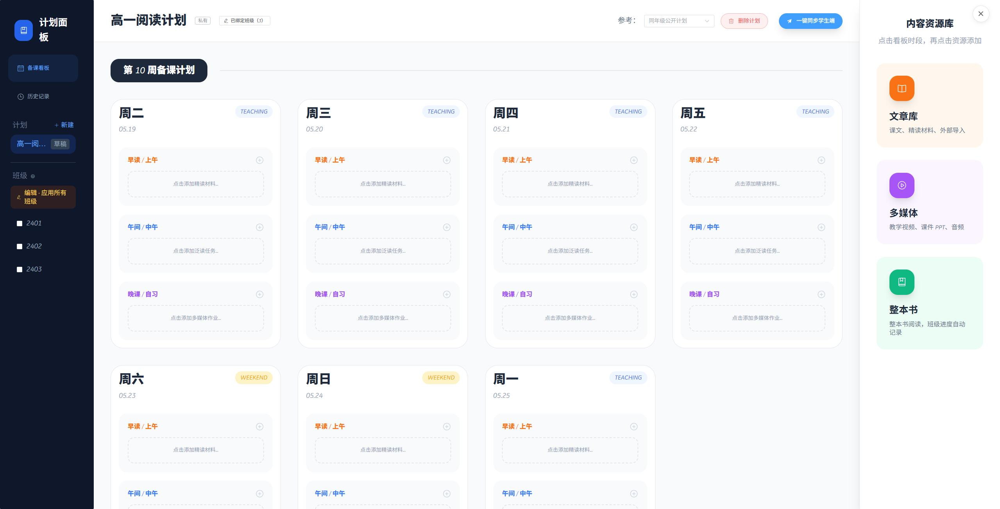
教师可按周次、按日期提前规划阅读任务，精读、泛读、多媒体作业一屏轻松搞定。支持碎片化时间安排，科学编排。
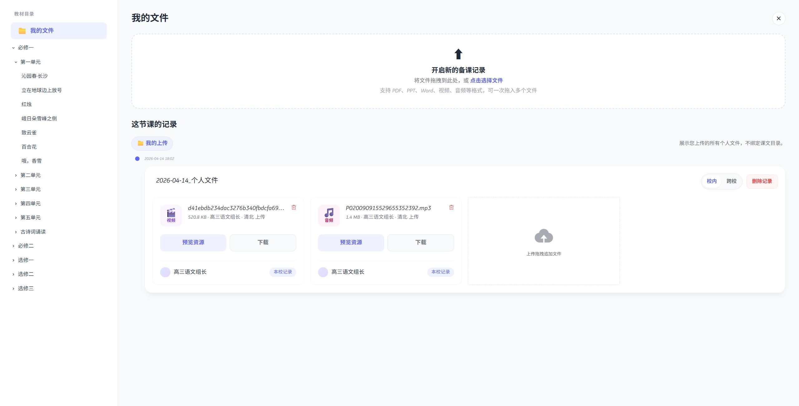
内置高考高频词汇池，支持自主新建词包，单词一键生成原生文章与高考难度真题例句。深度绑定课堂，让词汇教学告别机械死记。
内置高考英语高频词汇，按频率和难度分级，精准覆盖考试重点。教师可根据教学需要自主创建词包，灵活适配不同教学计划。
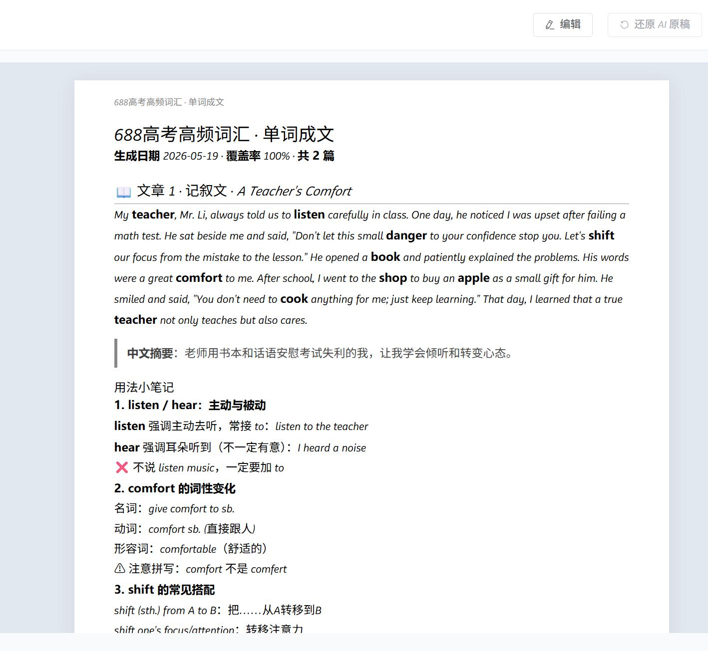
打破校际教研壁垒，汇聚全国名师智慧。一键发布教研贴、共享优秀教学心得，让日常备课拥有更明确的方向和更强大的智囊团。
汇聚全国名师、教学组长，围绕教学重难点展开实时讨论与灵感碰撞。一键发布教研贴、共享优秀教学心得，让每位教师都能站在巨人的肩膀上。
秒读课堂部署在教室多媒体大屏和教师电脑端，课堂训练与备课管理无缝衔接，真正实现"每天碎片化阅读半小时，语文成绩稳步提升"。
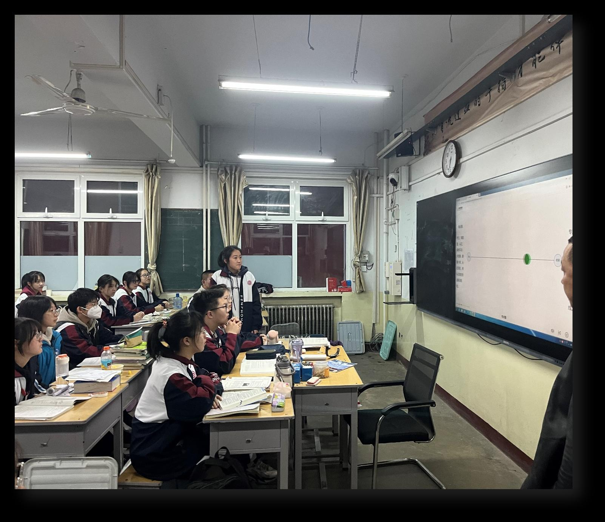
教室多媒体大屏集中训练，教师实时掌控全班阅读状态，营造沉浸式学习氛围
电脑端一键备课、数据管理、学情分析，教师可随时查看班级阅读数据
大屏训练数据实时同步至电脑端，教师备课与课堂教学无缝衔接
自动生成阅读报告，班级维度和个人维度数据分析，精准评估教学效果
教室：多媒体大屏课堂集体训练 | 办公室：电脑端备课与数据管理
双端协同，让阅读训练融入日常教学，不增加额外负担。
紧扣新高考核心素养，分类清晰，让学生随时补充背景知识，轻松应对情景化考题。海量语料24小时实时更新，紧跟社会热点和高考动向。
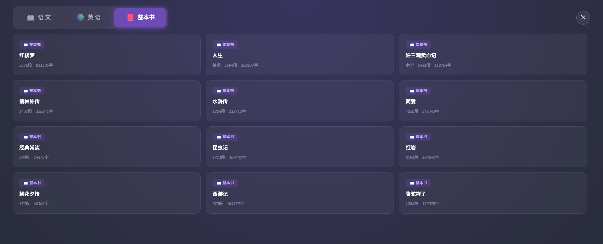
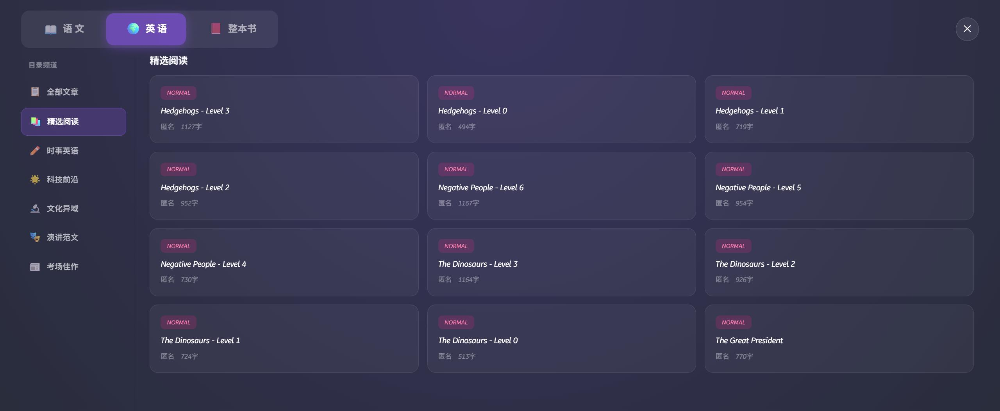
新高考命题强调"无情景，不成题"，情景语料库帮助学生积累跨学科背景知识，轻松应对情景化考题。教师也可从中选取教学素材，提升课堂深度和广度。
秒读课堂围绕"快速阅读能力提升"这一核心目标，构建了五大功能体系，全方位赋能学生阅读能力的提升：
通过科学的眼肌训练和专注力训练，系统性提升学生的阅读速度。从传统的逐字阅读到快速扫读，让学生掌握一目十行的阅读技巧。训练数据表明，经过一个月的系统训练，学生阅读速度平均提升47%。
结合脑科学与心理学原理，通过反复训练强化记忆能力。让阅读内容真正内化为学生的知识储备，实现"读一遍就能记住"的效果。配合遗忘曲线的科学复习机制，确保长期记忆效果。
精选文章库精准把握新高考方向，围绕"一核四层四翼"评价体系，精选符合高考命题趋势的阅读材料。让学生在日常训练中就能接触到高考级别的阅读内容，提前适应考试节奏。
数字化阅读界面科学设计，配合护眼模式和定时提醒，保护学生视力健康。合理的字体大小、行间距和背景色设置，减少长时间阅读对眼睛的伤害。
培养良好的阅读习惯和快速阅读能力，不仅服务于高考，更为学生终身学习奠定坚实基础。快速阅读能力是一项受益终身的核心能力，帮助学生在未来的学习和工作中持续受益。
专注力是影响阅读效率的核心因素。秒读课堂通过系统化的专注力训练，帮助学生建立高效的阅读状态：
通过专业设计的眼肌训练，提升眼球运动速度和精准度，为快速阅读打下生理基础
系统设定的专注力训练程序，帮助学生逐步延长专注时间，提升阅读时的注意力集中度
通过限时阅读训练，营造适度紧张感，激发学生潜能，逐步提升阅读速度
实时记录专注力训练数据，让学生和教师清晰看到进步轨迹，增强训练动力
秒读课堂的专注力训练基于认知心理学和脑科学研究成果。通过反复的视觉追踪、注意力分配和工作记忆训练，提升大脑的信息处理速度和效率。研究表明，持续4周的系统训练可以显著改善学生的阅读专注力。
建议每天进行3次专注力训练，每次10-15分钟。利用早间、午间、晚间碎片化时间，坚持一个月即可看到显著效果。训练过程中，系统会自动调整难度，确保每位学生都能在"最近发展区"内获得最佳训练效果。
"秒读课堂"根据新高考对大语文快速阅读能力的提升所定制的数据库，是破解新高考"三无"命题趋势的有效抓手。专家团队精选过的文章库，能够精准把握新高考方向，从而解决教师选文章的痛点与精准性。
由教育专家、学科带头人组成的专业团队，从海量资源中精选符合高考命题趋势的优质文章
文章库24小时不间断更新，确保阅读内容的时效性和新鲜度，紧跟社会热点和高考动向
紧扣新高考核心素养和命题趋势，精选符合"三无"特征的阅读材料
按学科、主题、难度等多维度分类，方便教师精准选材、学生针对性训练
传统方式：教师需要花费大量时间在网络搜索、筛选、整理阅读材料
秒读课堂：专家团队精选，24h更新，一键获取，选材效率提升80%以上
所有文章经过专业团队审核，确保内容质量、难度适配和命题趋势匹配。让每一篇阅读材料都物有所值。
"秒读课堂"根据新高考对学生大量阅读提出的更高要求，重在提升学生的思维、思辨、理解等综合素养能力。唯有提高综合阅读能力，才是战胜新高考的必备条件。
通过大量阅读训练，培养学生的逻辑思维、发散思维和创新思维。让学生在阅读中学会分析、归纳、推理，形成系统化的思维能力。快速阅读训练不仅提升速度，更能激活大脑的高速信息处理模式。
通过多元化的阅读材料，培养学生的批判性思维和辩证分析能力。让学生学会从不同角度审视问题，形成独立思考的习惯。这正是新高考"无思维，不命题"所要求的核心能力。
通过精读与泛读相结合的训练模式，提升学生对文本的深度理解能力。包括信息提取、主旨概括、推理判断、鉴赏评价等多维度的理解能力。
通过海量情景化阅读材料的训练，让学生提前适应新高考的命题风格和要求
通过快速阅读训练，将阅读速度从450字/分钟提升至660字/分钟以上
通过系统化的阅读计划和精选文章库，全面覆盖新课标要求
基础阅读 → 快速阅读 → 深度理解 → 批判思维 → 综合素养——秒读课堂为学生设计了科学的能力提升路径，从基础到高阶，循序渐进地提升综合阅读能力。
打破信息孤岛，实现资源无缝协同。秒读课堂为学校搭建了云端备课平台，让教学资源的管理和共享变得高效便捷。
系统预置全套教材目录，多位老师可同组操作上传下载、实时更新，告别繁琐繁杂的传统交接。教研组协作效率大幅提升。
一键开启跨校公开共享通道，打破校际壁垒，让优质教学资源一触即达。区域教育资源均衡化成为可能。
清晰的数字化全书目录指引，帮助学生合理规划阅读节奏，让深度长阅读不再难以坚持。教师可按周次、按日期提前规划阅读任务，精读、泛读、多媒体作业一屏轻松搞定。
教师可按周次、按日期提前规划阅读任务，精读、泛读、多媒体作业一屏轻松搞定
学生阅读行为自动记录，无需手动打卡，数据真实可靠
自动生成阅读报告，教师、家长、学生均可查看阅读进度和效果
阅读任务到期提醒，确保学生按时完成阅读计划
传统备课模式下，教师各自为战，优质资源难以共享。秒读课堂的云端备课舱让教研组协作变得轻松高效，优质教学资源在校内、校际间自由流动。
秒读课堂2.0全新引入AI辅助备课功能，让教师的备课效率和质量实现质的飞跃：
针对现代文核心文本，一键对关键语句、段落进行深度精讲与多维剖析。AI自动识别文本中的修辞手法、表现手法、主题思想等要素，为教师提供全面的教学参考。节省教师大量备课时间，提升教学深度。
对话式生成教学大纲与课堂设计，为老师提供教学灵感。教师只需输入课文标题或关键词，AI即可生成完整的教学大纲、课堂活动设计和教学建议。支持多轮对话优化，直到满意为止。
经典古文上传即完成。系统直接自动产出精准翻译、语法句式、词语注释及典故出处。让古文教学变得轻松高效，教师可以将更多精力放在文化内涵的讲解上。
AI辅助备课不是替代教师，而是赋能教师。让教师从繁琐的基础工作中解放出来，将更多精力投入到教学设计、课堂互动和学生指导上，真正实现"以学生为中心"的教学理念。
声临其境，让英语阅读"动"起来。秒读课堂引入AI语音技术，为英语阅读学习带来全新体验：
原声高保真音频同步播放，打造纯正的浸润式语言环境，提升听力理解能力
特设智能跟读模式，实时呈现中文释义，听、读、意完美融合，全面攻克语境词汇
AI实时评估学生发音，提供精准的发音纠正建议，提升口语表达能力
纯正真题级原声例句辅助记忆，在阅读情景中快速实现高频词汇的深度内化
内置高考高频词汇池，支持自主新建词包，单词一键生成原生文章与高考难度真题例句。
内置高考英语高频词汇，按频率和难度分级，精准覆盖考试重点
教师可根据教学需要自主创建词包，灵活适配不同教学计划
单词一键生成原生文章与高考难度真题例句，在语境中学习词汇
采用"认识/不认识"卡片式交互界面，无感追踪遗忘曲线，自适应调整复习频率
支持"发布到听写"与班级大屏联动推送，让词汇教学告别机械死记。深度绑定课堂，让词汇学习变得高效有趣。
对标高考情景命题，海量语料一屏纵览。紧扣新高考核心素养，分类清晰，让学生随时补充背景知识，轻松应对情景化考题。
按学科、主题、场景、难度等多维度分类，方便精准检索和选用
紧跟社会热点和时事动态，24小时不间断更新情景语料
紧扣新高考"无情景，不成题"的命题趋势，精选情景化阅读材料
从基础到高阶，覆盖不同水平学生的阅读需求
打破校际教研壁垒，汇聚全国名师智慧。秒读课堂搭建了教师共研平台，让优质教研资源跨越地域限制，实现全国共享。
汇聚全国名师、教学组长，围绕"整体感知"等教学重难点展开实时讨论与灵感碰撞。让每位教师都能获得全国名师的教学智慧。
一键发布教研贴、共享优秀教学心得，让日常备课拥有更明确的方向和更强大的智囊团。
秒读课堂不仅是一个教学工具，更是一个教师成长社区。在这里，教师可以学习优秀同行的教学经验，分享自己的教学心得，共同成长进步。全国优秀教师的智慧汇聚，让每一位教师都能站在巨人的肩膀上。
高一学生经过近一个月的快速阅读训练，阅读速度得到显著提升。以下为实际训练数据：
开启一天的学习状态，通过专注力训练唤醒大脑，配合精选文章进行晨间速读训练
利用午休前的碎片时间，进行轻松的泛读训练，拓展知识面
晚间精读时段，深度理解文章内容，配合测试检验阅读效果
经过一个月的系统训练，学生阅读速度从平均450字/分钟提升至660字/分钟，提升率达47%。更重要的是，阅读理解能力同步提升，真正实现了"读得快、记得住、理解深"的训练目标。
多所学校使用秒读课堂一年后，学生语文成绩均有不同程度的提升，验证了产品的长期效果：
使用前班级平均：108.5分
使用后班级平均：114.5分
↑ 平均提升 6 分
使用前班级平均：115.8分
使用后班级平均：125.3分
↑ 平均提升 9.5 分
| 学校 | 使用前平均 | 使用后平均 | 提升幅度 | 使用周期 |
|---|---|---|---|---|
| 山西某高中（实验班） | 108.5分 | 114.5分 | +6分 | 1年 |
| 河南洛阳某高中（培优班） | 115.8分 | 125.3分 | +9.5分 | 1年 |
学校每天利用碎片化时间安排学生进行三次秒读课堂训练，每次10-20分钟，不影响正常教学秩序：
开启一天的学习状态，通过专注力训练唤醒大脑，配合精选文章进行晨间速读训练。
利用午休前的碎片时间，进行轻松的泛读训练，拓展知识面，积累阅读素材。
晚间精读时段，深度理解文章内容，配合测试检验阅读效果，巩固当日所学。
由班长负责操作秒读课堂平台，培养学生自主管理能力
老师负责将训练情况拍照发送至教研群中，实时跟踪反馈
课代表按照平台要求进行测试并收集交给语文老师
班主任监管 · 年级组检查通报 · 校长每周例会检查
注重基础阅读能力培养，以泛读为主、精读为辅，逐步提升阅读速度和理解能力。
聚焦高考备考，精读泛读结合，强化情景化命题训练，精准对接高考要求。
语文高考成绩达到125分以上（部分学校130分以上），对负责教师进行考核和奖励。以月为单位进行阅读内容抽查，对抽查优秀班级及语文教师进行奖励。